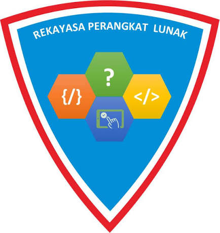

📷
Aplikasi Inventaris QR
Sistem peminjaman alat laboratorium berbasis web responsif dengan pemindai QR Code.
Enam kompetensi keahlian, guru pembimbing berpengalaman, dan praktik langsung di dunia industri. Temukan jurusan yang cocok untukmu.

Jurusan RPL membekali siswa dengan kemampuan membuat aplikasi web, mengelola basis data, dan memprogram berbagai perangkat lunak. Lewat portal ini kamu bisa melihat kurikulum, karya siswa, jadwal praktikum, dan informasi PKL.
Membuat website responsif yang tampil baik di semua perangkat.
Merancang dan mengelola data dengan SQL.
Menyusun program dengan konsep class dan objek.
Persiapkan portofolio web responsif kalian sebelum jadwal asesmen.
Konsultasikan tempat PKL dengan guru pembimbing jurusan.
Enam kompetensi keahlian di SMK Negeri 9 Medan. Pilih kartu untuk melihat detail, atau tanya asisten.
Guru pembimbing pada setiap kompetensi keahlian. Klik kartu untuk bertanya.
Mata pelajaran inti jurusan RPL yang dipelajari dari kelas X sampai XII.
Beberapa proyek yang dikerjakan siswa kelas XII RPL. Klik kartu untuk bertanya.
Sistem peminjaman alat laboratorium berbasis web responsif dengan pemindai QR Code.
Platform ujian berbasis komputer yang adaptif pada desktop lab maupun smartphone.
Etalase digital karya kreatif siswa jurusan Rekayasa Perangkat Lunak.
Hubungi jurusan RPL untuk informasi pendaftaran, kerja sama PKL, dan kegiatan lainnya.
Jadwal penggunaan laboratorium (contoh, silakan sesuaikan).
| Hari | Mata Pelajaran | Lab |
|---|---|---|
| Senin | Pemrograman Web | Lab 1 |
| Rabu | Basis Data | Lab 2 |
| Jumat | Pemrograman Berorientasi Objek | Lab 1 |
Materi yang dipelajari pada modul pemrograman web tingkat lanjut.
Ruang praktik yang digunakan siswa RPL. Klik kartu untuk bertanya.
Pemrograman dan pengembangan web.
Basis data dan jaringan.
PKL melatih siswa bekerja di dunia industri, sedangkan LSP adalah uji kompetensi untuk mendapatkan sertifikat keahlian.